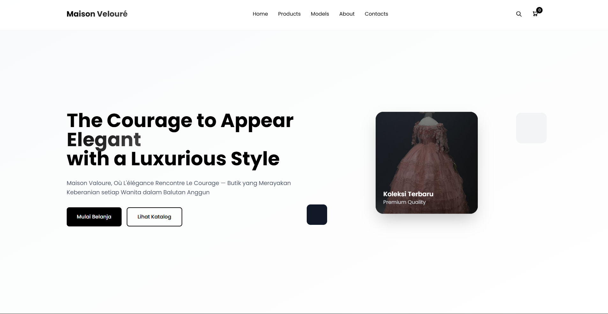
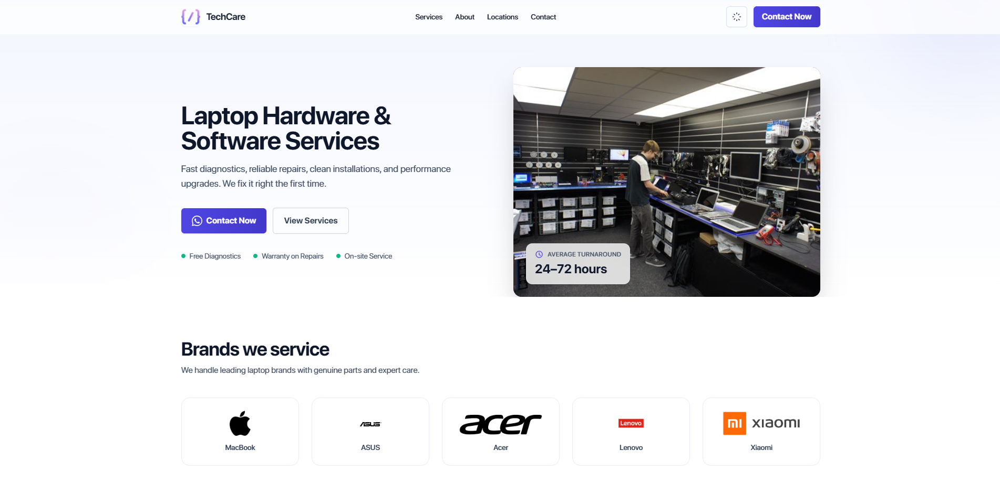
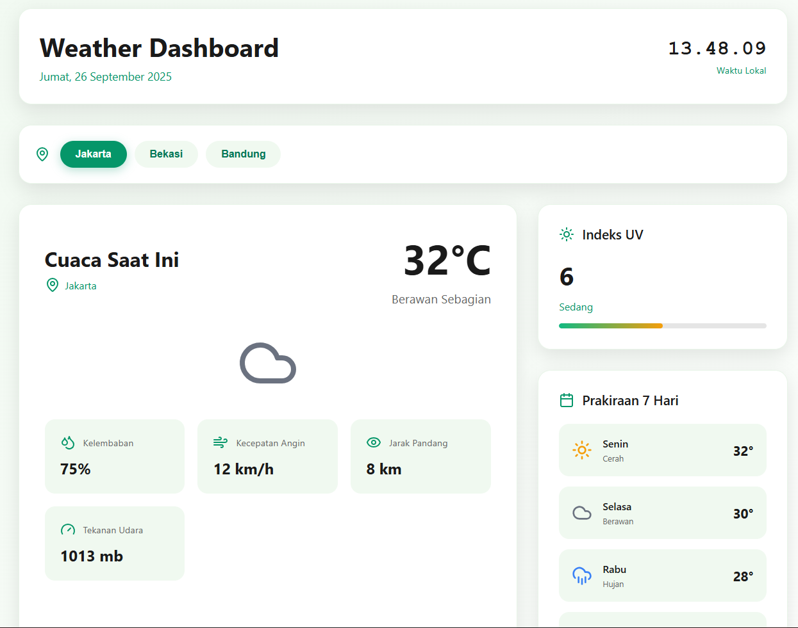
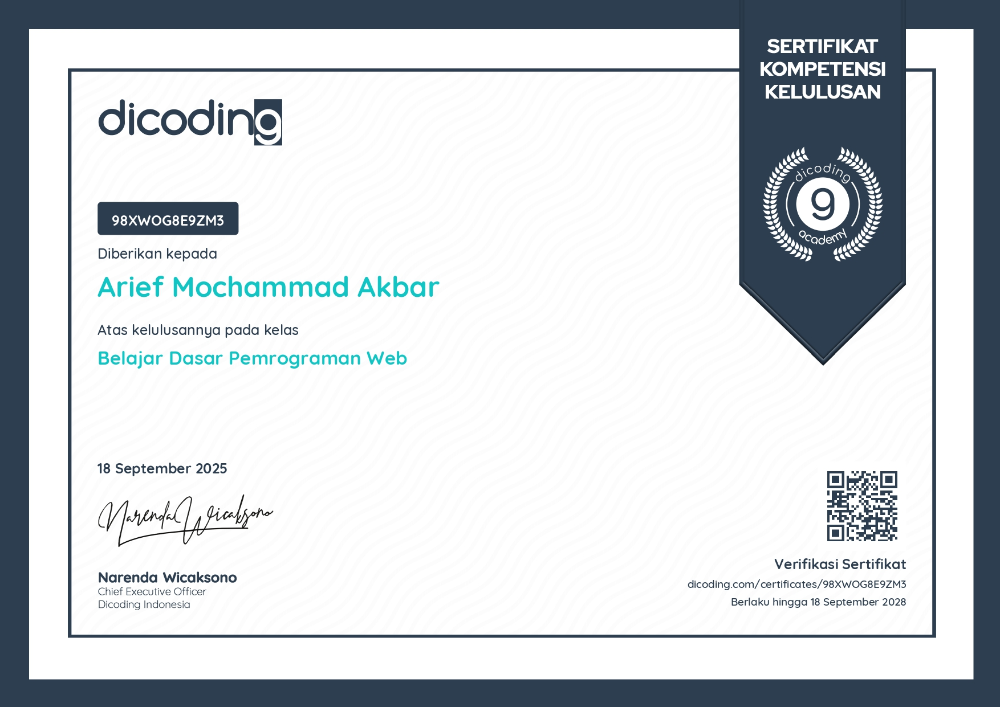
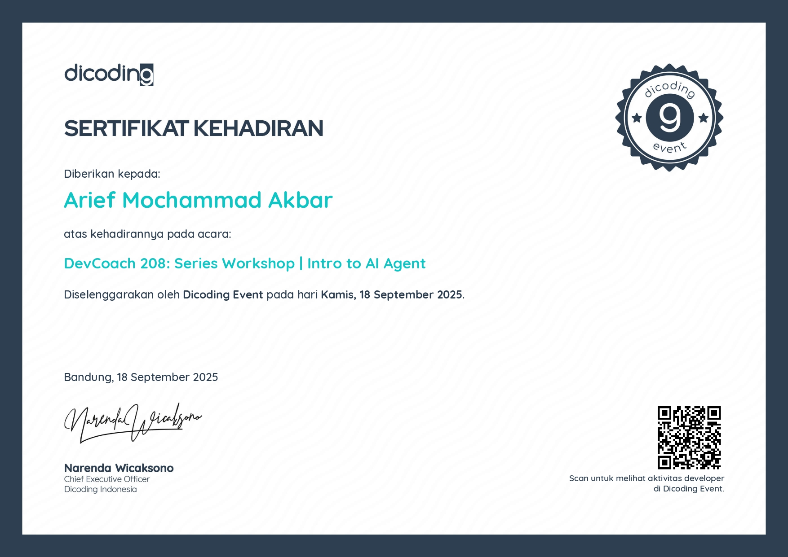

A Developer who
Judges code
by its
interface
...
Because if the user experience does not impress you, what else can?
I'm a Informatics Engineering Student |
A passionate front-end developer and UI enthusiast dedicated to crafting clean, modular, and high-performance digital products that strike an equilibrium between user delight and robust architecture.
Journey & Milestones
Experience & Education
Switch between tabs below to explore academic background, verified credentials, and engineering specializations.
Pamulang University
Bachelor of Computer Science / Informatics Engineering
Enrolled in undergraduate Informatics Engineering, studying core software engineering principles, algorithmic complexity, database architectures, and cutting-edge web technologies.
Modular design, scalable component hierarchies, and clean code paradigms.
High-performance responsive rendering, REST APIs, and UI/UX accessibility.
SMK Bina Putera Nusantara
Network & Application Systems (SIJA)
4-year comprehensive technical program developing practical foundations in computer networking, system administration, web markup standards, and responsive front-end programming.
Continuous Academic & Practical Progression
Bridging vocational networking skills with computer science engineering theory.
Front-End Web Developer
Google Authorized Training Partner
Mastered comprehensive modern front-end engineering: asynchronous JavaScript (Fetch & REST APIs), Shadow DOM, custom Web Components, Webpack build automation, and web performance profiling.
AI Agent & Modern Web Workflows
Autonomous Developer Tools
Specialized training in architecting AI-assisted developer workflows, generative UI pipelines, prompt engineering for code generation, and automated front-end testing suites.
Production Web Platforms Delivered
Built luxury e-commerce boutique (React), real-time PC repair tracking (Vue + Socket.io), and climate analytics dashboard.
I'm currently looking to join a
cross-functional team
that values improving people's lives through accessible, high-performance web
engineering.
Clean & Modular Code
Writing scalable, readable front-end components adhering strictly to DRY principles, modern ES6+ patterns, and clean architecture.
Responsive & Fluid UX
Creating intuitive interfaces that render flawlessly across mobile, tablet, and ultra-wide displays using modern Tailwind CSS grid systems.
Performance & Interactivity
Optimized asset bundling, minimal cumulative layout shifts (CLS), and fluid micro-interactions that make every page visit feel instantaneous.
Showcase & Innovations
Featured Projects (Lab)
Click on any project card or explanation button to view interactive technical details.
Featured Project
Maison Velouré – Modern Luxury E-Commerce Platform
A full-featured modern e-commerce fashion boutique platform designed to deliver an elevated, luxurious shopping experience. Features real-time catalog filtering, interactive persistent cart state, responsive grid layouts, and streamlined checkout UI.

Featured Project
Tech Care – Real-Time Repair Service System
A comprehensive web service portal designed for computer hardware repair centers. Bridges technicians and customers through real-time repair tracking, live chat consultation powered by Socket.io, service scheduling, and transparent invoice estimates.

Featured Project
Weather Dashboard – Interactive Climate Forecast Hub
An intuitive real-time weather analytics application featuring accurate global forecasts, interactive meteorological temperature trends with Chart.js, humidity, wind velocity, and location search with automatic geolocation lookup.

Technical Arsenal
Skills & Technologies
Frontend Core
Styling & UI
Tools & Ecosystem
Credentials
Verified Certificates
Hover or tap the card to reveal details
Dicoding Academy
Front-End Web Development
Verified
Dicoding Academy Certificate
Official verified certification in Front-End Web Development — competence in modern DOM manipulation, web components & asynchronous JavaScript.
DevCoach AI Agent
AI Developer Specialization
Verified
DevCoach AI Agent Specialization
Certification verifying practical expertise in AI developer agent integration, generative workflows & modular web tool development.
Inspiration & Beats
Music & Soundtrack
Contact
I'm currently looking to join a forward-thinking cross-functional team, or have an exciting project in mind? Let's connect.
ariefakbar2006@gmail.comSend a Direct Message
© 2026 Arief Mochammad Akbar. All rights reserved.